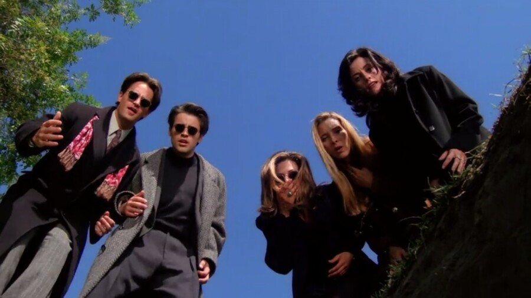

character
시즌 정보

시즌 설명

*왼쪽부터 차례로 설명
시즌1
레이첼이 모니카의 집에 오면서 6인 구도가 형성된다.
옴니버스 형식의 드라마이기에 연결되는 뚜렷한 스토리는 없을지라도 로스가 레즈비언 아내와
파혼한 일, 파혼했으나 파혼 전에 생긴 아이가 태어난 일 등의 에피소드가 전개된다.
시즌2
사실 레이첼을 예전부터 짝사랑해온 로스가 레이첼과 사랑을 하게 된 일과
조이가 오랜 꿈인 '배우'를 이루며 에피소드가 전개된다.
시즌3
레이첼과 로스가 헤어지는 일과 가족이라곤 사이가 안좋은 동생 뿐이었던 피비가 사실
엄마가 있다는 일 등의 에피소드가 전개된다.
시즌4
로스가 영국 여인 에밀리를 만난다. 한편 엉뚱한 피비는 남동생의 존재를 알고, 피비와 똑같이
엉뚱한 그 남동생은 20살 연상과 결혼한다. 피비는 임신이 어려운 남동생 부부를 위해 임신을 한다.
시즌5
모니카와 챈들러의 연애를 중심으로 에피소드가 전개된다.
한편, 로스는 영국 연인 에밀리와 결혼을 하러 영국에 가는데...